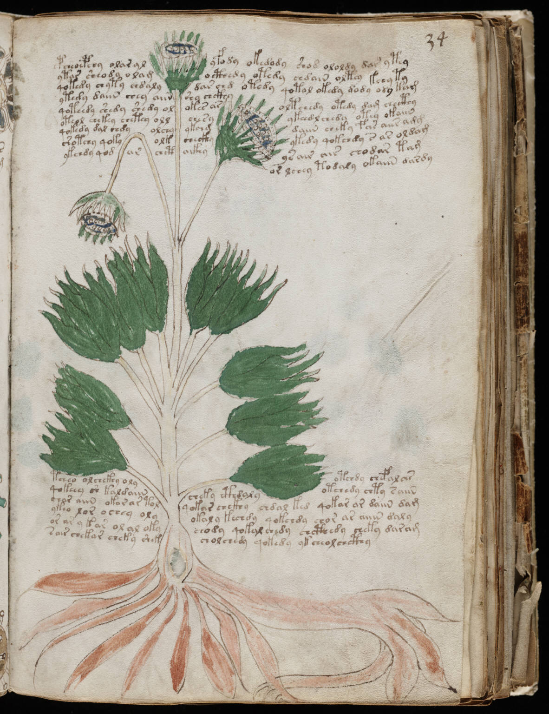

f34r
1pcheoepchy olar ylyfody okedody shod ololdy dar ytey2ytar sheody olamocthede otedy chdain oltey kchy ty3qotedy chyty chdalydar chd otedy qotol okedy dody ody kam4ytedy daiin chey aiinshy chckhyoltchedy otedy dam checthy5qoteedy shedy shedy olokes arykeedl chedy otey okaiin6oteol chekey chetey ollchesydaiin cheky fchs aiir amg7qokedy dal chdyolchyykchegykedy qokchdy s ar oldam8shotchy qokyolkcheckhyysair air chodar tam9ykchdy qodarchctaikhyorlchey todaly okaiin dardy10tcheo olchckhy olyotchdy chefalas11qokeey sh kaldaiincheky cthdalyotchedy chty saiin12char aiin okor ar tolqokar chckhy chdal ked qokar ar daiin dam13ykeo lor ochey olyokaly kechdy qokchdy chor ar aiiin daly14or ar y kar ol al okychody qokal chedy chcthedy cheky daram15sair chekar cheky shekcholchedy qokedy yk cheolchcthy
